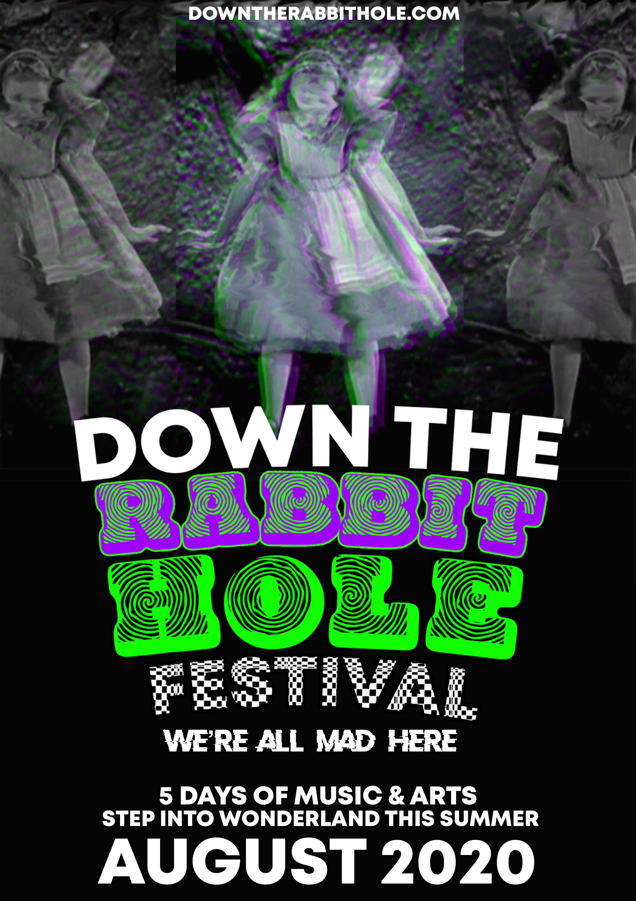

Firstly, i'm going to explain my history and ambitions in relation to design. After starting to study adobe software and design, I gained a massive interest for visual arts, logo design and graphic design in general. I went on to take on a Graphic Design diploma and graduate which helped me further my understanding of design fundamentals and contexts and allowed me to experiment with my style. Now, after having done the foundation course for Digital Media, I am ready to further develop my skills and take on new challenges too. On this page I am going to present various pieces of my work from over the years to summarise my graphic design style!
Mini Gallery
 Down The Rabbit Hole piece -
We we're assigned a project to market and design our own festival! I went with an Alice in Wonderland theme and this was very fun to experiment with!

Brexit piece -
This piece was inspired by the theme a moment in time, during this project Brexit was all over the news so I thought it would be a great thing to base my piece on. I went with a street inspired design for this which was very exciting to create!
Fantazia piece -
During my college years I discovered 90s dance rave design, I loved the quirky retro-futurisitc look and had to implement my ideas into a piece of my own!

Andy Warhol inspired piece -
After having previously worked with the Alice in Wonderland theme, I decided to revisit it for an Andy Warhol inspired piece, I enjoyed "toying" with the colours and layers.